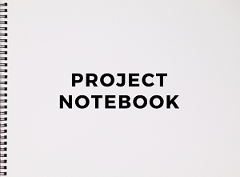

Capstone Project
Table of Contents
a. Objective
b. Project
c. Presentation
II.Project
Project Materials:
a. Project notebook
b. Code Book
c. The CN Network
III.Reflection Paper
a. Why I Selected This Project
b. Using Communication Theory To Approach The Project
c. Goals Of The Project
d. Next Steps
IV.Presentation
a. Video
b. PowerPoint Slides
I. Rubric
Objective
Capstone serves as a “culminating experience,” a way to synthesize and demonstrate what you have learned in the Communication field during your time at PLU.
It is a guided exploration that takes you through asking good questions to research design to project scope to theoretical application to final product and presentation.
Be selfish with your time and energy. Choose a project you really want to do and take ownership of it. I am here to help facilitate that goal.
1. To scope a semester-length project or paper that demonstrates learning in Communication.
2. To demonstrate an ability to conduct research on a proposed topic.
3. To apply theory to application either through a project or research paper.
4. To evidence senior-level college writing in content, style, and format.
5. To present your work to an audience of experts and non-experts so it is understood.
Project
Broadly speaking, this is an opportunity to take knowledge and theory from the classroom and apply it to solve a problem, capitalize on an opportunity, extend creative work you started in another class, and even connect with a field of interest for employment. You may work in teams, if you choose, depending on the scope of work.
The project includes these items in order as listed:
1. Title of project.
2. Table of contents.
3. Project itself (plan, social media guide, media kit, mediation facilitation guide, etc.).
7-10 page reflection on the process of creating the project:
a)Why did you select this project?
b)How did you use Communication theory to approach this project?
c)What are the goals of this project?
d)What are your next steps, if any?
Presentation
Throughout your time in Communication at PLU, you have been introduced to the standards of public speaking and given many opportunities to develop your skill.
The Capstone presentation is a final demonstration of competency -- how well have you learned to express yourself in this format.
If you are working as an individual (so this is likely most of you), you will deliver a 10-15 minute presentation on your project or paper.
If you are working in a small team, you will deliver a 15-20 minute presentation on your project. After your presentation either as individuals or in teams,
you should be prepared to take questions and comments from the audience.
Time:
10-15 minutes for individuals, 15-20 minutes for teams.
Medium:
Using your smart phone or other video recording equipment, please record your final Capstone presentation and upload it to the
PLU Communication Department channel by
Wednesday, May 20.
Audience:
Because we are in a distance learning environment, our department becomes our audience!
If you are safely in the company of others, you are welcome to have an audience from wherever you record your presentation.
Outline:
Speakers must speak from a 1-2 page extemporaneous outline.
There are some exceptions to the 1-2 page limit such as making the font larger or lengthy quotes from research sources.
Organization:
Your individual presentations should be organized. The speech should have an introduction, body, and conclusion (this should NOT be your name and topic statement).
Your introduction should have an attention getter, justification/link to the audience, thesis, and preview. The body has about 3 main points.
The conclusion includes a review and a statement of closure (that is NOT “thanks” or “any questions?”).
Content:
The content of the speech should be the support and evidence used to clarify, prove, and illustrate the claim of each main point. You need to incorporate and develop ethos, logos, and pathos.
You can certainly play audio or video clips, but they should not comprise more than 20% of your presentation time.
Delivery:
This speech should be practiced, professional, and polished. You are expected to use purposeful movement, gestures, eye contact, and facial expressions. You are expected to dress professionally.
You need to plan and practice your delivery, preparing and practicing in advance.
Auidence Responsibilities:
Each of you is responsible for evaluating 2 colleagues’ speeches.
II. Project
Project Materials
*CLICK ON IMAGE TO VIEW CONTENT*
*Open up the Project Notebook on a seperate tab to better connect and understand the content discussed in this section*

The Project Notebook is a place where I brainstormed ideas for my capstone project.
This notebook includes my capstone project idea called The CNI Program. Due to unprecedented circumstances involving the COVID-19 pandemic, I have been limited with this project and been forced to scale down.
However, I still went ahead and made a blueprint for the eventual implimentation of this program which includes coding approaches,
research on internet archives, databases and their functions, a handful of computer models, and other tools and frameworks neccessary to see this project through.
I also included the psuedo code paramaters for the The CN Network- the website you are currently on. I encourage you to give the notebook a look to better understand my project and
the content that will be discussed in the following sections.
With the mentorship of Dr. Hoyt of the Communication Department and Dr. Renzhi of the Computer Science Department, and a few computer science students of Pacific Lutheran Univeristy,
I went on to create a blueprint for a program that I named the Credible News Identifier (CNI) in the Project Notebook and the Code Book (in the section below).
The goal of this project was to create a prototype of an api (application program interface) that would be able to distinguish real news from fake news using the guidelines provided by The Trust Project.
Through this program, I want to encourage credible local news and national news consumption. Secondly, I want to educate people on how to engage in media literacy through the usage of trust indicators.
Lastly, I hope this program will help people realize how machine learning can be used to tackle misinformation and "fake news".
To make this program a reality, I created a code book based off of the contents within the Project Notebook that would be used to "code" the program which software engineers, journalists,
and other contributors would use to fight off misinormation on media news sites. Along with the Project Notebook, the Code Book is an equally important piece to the development of the CNI Program.
Continue on to the next section to understand the signifigance of the Code Book.
*CLICK ON IMAGE TO VIEW CONTENT!*
*Open up the Code Book on a seperate tab to better connect and understand the content discussed in this section*

I created the Code Book to better organize my thoughts and ideas for the blueprint of The CNI Program. The Code Book is based off of The Trust Project's "Core Trust Indicators and Editorial Attributes" table.
The Trust Project is an organization based in Southern California that fights off misinformation, pop filter bubbles, and has a goal to elevate trustworthy and ethically produced news.
Their transparency standards help newsrooms show how they are fulfilling journalism’s basic pledge: "to serve society with a truthful, intelligent and comprehensive account of events and ideas."
In this code book, there are a total of 9 tabs. There are eight core trust indicators and their attributes, and a "Byline Exemption" tab which are meant to offer transparency across multiple dimensions.
When you open up the code book you will see organized chaos- tables filled with colors, definitions, and other necessary components all intended to serve a specific purpose.
I made revisions, adjumstments and additions to the code book by accessing The Wayback Machine (an internet archive), the Markkula Center for Applied Ethics, and a table- Core Trust Indicators and Editorial Attributes.
Below, I will detail the complexities of this code book in the form of a video that will hopefully clear up any confusion when looking at it in depth.
The video above is just a placeholder for the time being til I upload the video detailing the Code Book.
Sources:
The Trust Project
Core Trust Indicators and Editorial Attributes
Markkula Center for Appied Ethics
The Wayback Machine
I developed this website so that I could present my capstone project virtually to my professors, classmates, friends, and family of Pacific Lutheran University in reaction to the COVID-19 pandemic. I also realized I could use this website to network for the long-term.
This website gives me a platform to put the culmination of all my work onto one place while making it accessible to everyone. It is also interactive in that it allows people to click on images, tabs, and social media to be further engaged with the content and to better know me.
The website was designed to be easy to navigate from tab to tab, and be aesthetically appealing to look at. To develop this website, I used programming languages HTML, CSS, and the editing software Atom.
Sources:
The CN Network - Code / Github Repositories
III. Reflection Paper
Essay
stuff
stuff
stuff
stuff
IV. Presentation
Video
The video above is just a placeholder for the time being til I upload the capstone presentation video.
Sources:
PLU Communication Department YouTube Channel
PowerPoint Slides

The PowerPoint Presentation for my capstone project has no content in it as of now. If you want to test out the functionality of the PowerPoint, go right ahead.